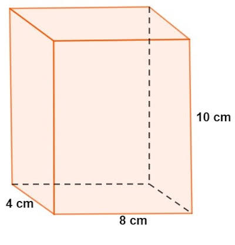
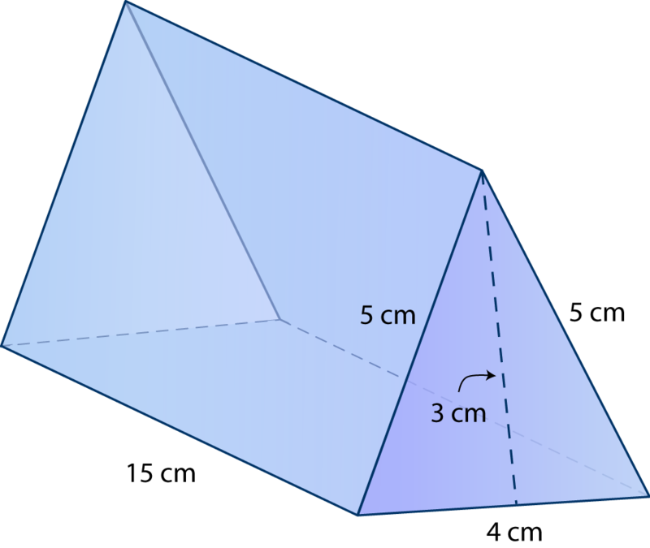

Matematica
Atividades
Nesta aula Levamos os poliedros de acrilico em sala para calcularmos a area
Tetraedro, Cubo, Dodecaedro Icosaedro são os regulares

Aqui os primas

Aqui os primas

tipos de face para calcular a area
\(Area_{triangulo}=\frac{b \times h}{2}\)
\(Area_{quadrado}=l^2\)
\(Area_{retangulo}= c \times l\)
Obs: pentagono e hexagono podemos dividir em triangulos para os calculos.
- Uma fábrica irá fazer embalagem para um certo produto, quanto de papelão irar usar em 1000 embalagem?

- Faça o desenho da planificação da embalagem?
- Qual o volume (espaço) que possui esta embalagem?
- Uma casa tem o telhado e formato de prisma triângular, qual a area a ser coberta pelo telhado?

- faça o desenho da planificação do telhado?
- Se uma certa telha tem dimensões 40cm por 20cm quantas telhas serão usadas?